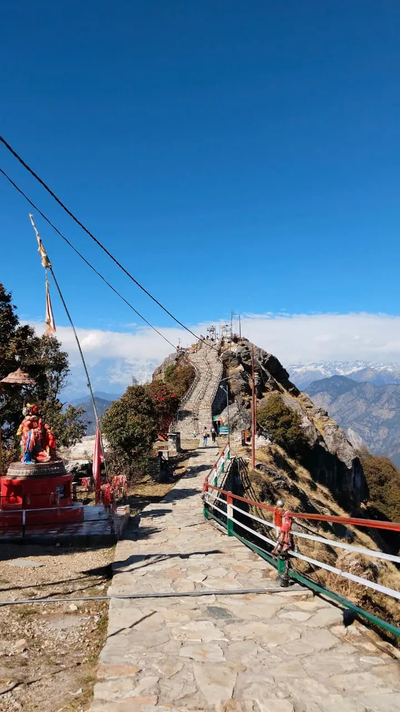
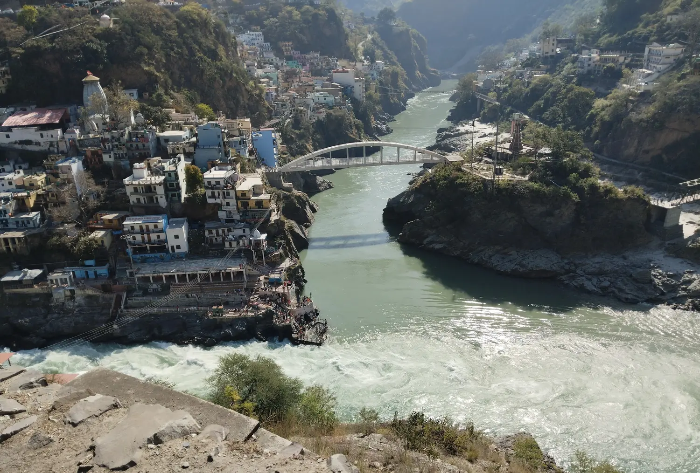
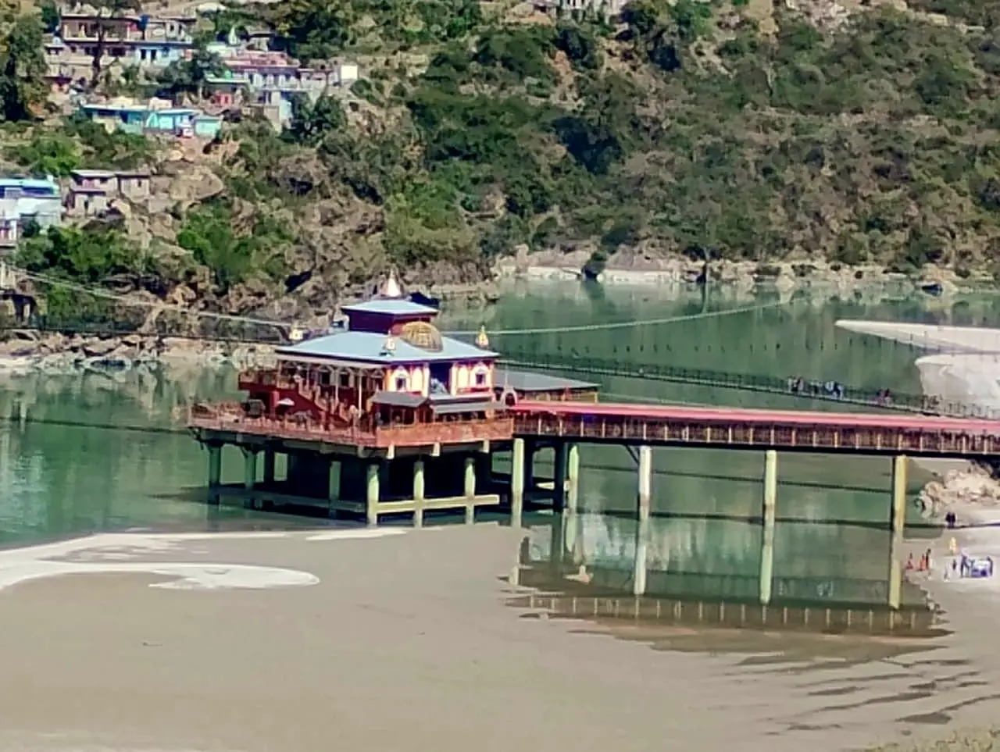
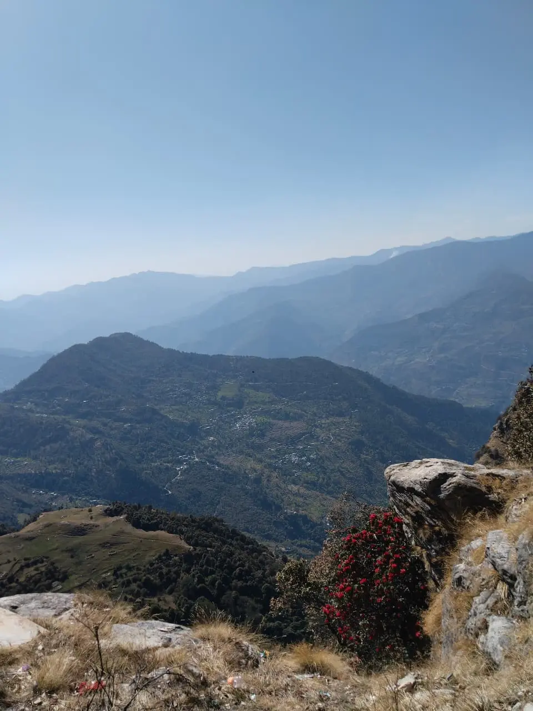
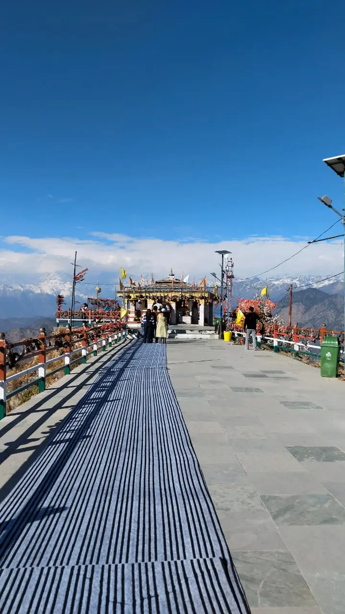

Kartik Swami Temple Trek Guide – Distance, Route, Entry Fees & 360° Himalayan Views

Kartik Swami Temple is a famous temple in Uttarakhand, located in the Rudraprayag district near Kanakchauri village. After reaching the village, visitors need to complete a 3 km trek to reach the temple, which is situated at the peak of a mountain. This ancient shrine is dedicated to Lord Kartikeya (son of Lord Shiva) and is especially known for offering breathtaking 360° views of the Himalayan ranges.
This Kartik Swami Temple trek guide covers distance from Rishikesh, entry fees, route details and complete travel experience.
I visited Kartik Swami Temple with my family by car. It is approximately 175–190 km from our hometown near Rishikesh. Throughout the journey, we witnessed beautiful mountain landscapes, forests, and river valleys. One of the most interesting parts of our route was the sacred Devprayag Sangam — the merging of two rivers, where one known for its calming nature Alaknanda and the other opposite one known for its furious nature Bhagirathi forming the holy River Ganga.
How to Reach Kartik Swami Temple
The drive from Rishikesh to Kanakchauri village takes around 7–8 hours to cover approximately 175–190 km. To reach on time, we left home around 6 AM.
The road conditions were mostly good and motorable, though the route includes narrow mountain bends and landslide-prone areas, so careful driving is necessary.
Our route included these checkpoints:
- Rishikesh to Devprayag
- Devprayag to Srinagar
- Srinagar to Rudraprayag
- Rudraprayag to Kanakchauri village (around 40 km from Rudraprayag town)
After reaching Kanakchauri village, we began the 3–4 km trek to the temple, which usually takes between 45 minutes to 1.5 hours depending on pace. Along the driving route, there are several restaurants, tea stalls, and small stay options where travelers can take breaks.
Devprayag Sangam Experience
Our journey also included a stop at Devprayag Sangam, which was my first experience witnessing the confluence of two major rivers forming the Ganga.

The view was both calming and intense. The colors of the two rivers were visibly different. Although I did not step into the water, I could clearly notice the difference in their flow speed. That day, I understood why the Alaknanda River is considered calm while the Bhagirathi River is known for its powerful and fierce current.
Even the people taking holy dips near the ghat avoided stepping into the stronger current of the Bhagirathi River. Watching this sacred confluence felt spiritual and slightly overwhelming. It was incredible to witness the transformation point where the holy River Ganga begins.
Dhari Devi Temple – Protector of Char Dham
Further along the route, between Srinagar and Rudraprayag, we stopped at the famous Dhari Devi Temple located in Kalyasaur on the banks of the Alaknanda River. This revered shrine is dedicated to Goddess Kali and is believed to be the protector of the Char Dham pilgrimage.

According to local belief, the idol of Goddess Dhari Devi changes its appearance three times a day — appearing as a young girl in the morning, a woman in the afternoon, and an elderly woman in the evening.
Kanakchauri Village & Trek Experience
After reaching Kanakchauri village, we found a designated parking area, though space was limited and it took some time to find a proper spot.
Before starting the trek, we had to pay entry fees to the forest department and receive tickets. The trek begins right after this point.

The 3–4 km trek is a steep ascent and follows a natural mountain path rather than constructed steps. Wearing sports shoes and comfortable clothing is highly recommended.
This trek was covered with a forest of Oak and Rhododendron trees as I went in their blooming season March the whole forest was covered with red and pink flowers, and there were several benches and rest points also. Many visitors stop here to relax and take photographs, as the background views of mountains and Himalayan peaks are breathtaking.
After covering around 2.5 km, we reached a small resting area with food stalls and small shops where travelers can buy refreshments and snacks. Shortly after this point, we reached the main temple located at the mountain peak.
Near the temple entrance, there is a water tap for drinking water and a designated area to keep footwear. After climbing a small set of stairs, we finally reached Kartik Swami Temple.
Entry Fees & Charges
Entry Fees:
- Local villagers – ₹0
- Uttarakhand residents – ₹10
- Indian tourists – ₹50
- Foreign tourists – ₹100
Camera Charges:
- DSLR – ₹200
- Drone – ₹500
Temple Experience & Spiritual Significance

Kartik Swami Temple is dedicated to Lord Kartikeya, the son of Lord Shiva and Goddess Parvati. There is a well-known mythology associated with this temple.
According to legend, Lord Shiva challenged his sons, Kartikeya and Ganesha, to race around the universe. The winner would be worshipped first. While Kartikeya set out to circle the universe, Lord Ganesha circled around his parents, saying that they were his universe. Impressed by his wisdom, Lord Shiva declared Ganesha the winner.
Upset by this decision, Lord Kartikeya, who was in the Himalayas, is believed to have sacrificed his physical body to his father. This event is said to have taken place at Kronch Parvat, where Kartik Swami Temple now stands. It is considered one of the rare temples dedicated specifically to Lord Kartikeya.
The spiritual energy of this temple felt very different from other places I have visited. There was a unique calmness mixed with a powerful atmosphere. Standing at the peak and viewing the vast Himalayan ranges felt peaceful and overwhelming at the same time.
Best Time to Visit Kartik Swami Temple
The best time to visit Kartik Swami Temple is between October and June. A large number of devotees visit the temple during Kartik Purnima, which is usually celebrated between October and November. During this time visitors, can also enjoy clear 360-degree views of snow-covered Himalayan peaks.
Things to Carry for Kartik Swami Trek
- Water bottle
- Sport shoes
- Light jacket
- Snacks
- Cash
Frequently Asked Questions
How long is the trek to Kartik Swami Temple?
The trek is approximately 3–4 km and usually takes between 45 minutes to 1.5 hours depending on your pace.
What is the entry fee for Kartik Swami Temple?
Entry fees range from ₹0 for local villagers to ₹100 for foreign tourists.
Is the trek to Kartik Swami difficult?
The trek involves a steep ascent and natural mountain paths, so it can feel moderately challenging for beginners but manageable with proper footwear.
How far is Kartik Swami Temple from Rishikesh?
The distance from Rishikesh to Kanakchauri village is approximately 175–190 km and takes around 7–8 hours by road.